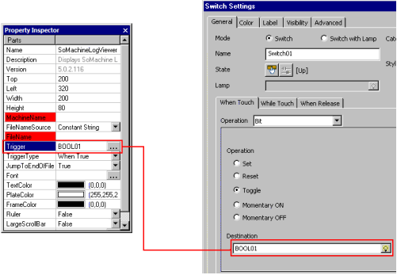

|
|
|
|
|
|
|
|
In the Navigator window's Project tab, select the panel where you want to place the SoMachine Log Viewer.
Click the Toolchest icon  in the menu bar to open the Toolchest window, and select the SoMachine folder.
in the menu bar to open the Toolchest window, and select the SoMachine folder.
Add the SoMachine Log Viewer onto the panel using a drag and drop operation. Resize as necessary.
In the Property Inspector, change the SoMachine Log Viewer properties.
The following table describes the SoMachine Log Viewer properties.
|
Property |
Description |
|
Name |
The object's name. Whenever an object is created, a default name is generated. When renaming an object, its name must be unique within the target, must contain no more than 32 valid characters, and must follow the naming conventions. For more information, see Appendix 9, Naming Conventions. |
|
Description |
Displays the description of the part. This property is read-only. |
|
Version |
Displays the version of Vijeo Designer. This property is read-only. |
|
Top |
The coordinates, in pixels, of the top-left corner of the log viewer.
By changing these properties, the log viewer can be moved up, down, left, and right.
|
|
Left |
|
|
Width |
Defines the size (width and height) of the log viewer in pixels. Enter values from 20 to 3000 for the Height, and from 10 to 3000 for the Width. By changing the values for these properties, you can change the log viewer's width and height. |
|
Height |
|
|
Machine Name |
Specify the controller from which runtime will retrieve the log file. If you do not have a controller, enter localhost.
|
|
File Name Source |
Select whether you want a constant string or string variable.
|
|
File Name |
If the File Name Source property is set to:
|
|
Trigger |
Click the ellipsis button to open the Variables List, and select an integer or BOOL variable to control when the SoMachine Log Viewer reloads the file. See the Trigger Types below for integer reload values. |
|
Trigger Type |
The trigger is evaluated using the condition selected here. When the condition is met, the SoMachine Log Viewer will reload the file. Select When True, When False, or On Data Change.
|
|
Jump to End of File |
Select False to show the first page when the SoMachine Log Viewer loads the file or True to jump to the end of the file. |
|
Font |
Click the ellipsis button to open the Font Editor. Specify the font, text size, and style for the file display. |
|
Text Color |
Specify the background (area) and text colors for the entire file display.
|
|
Plate Color |
|
|
Frame Color |
Specify the border color and the outer frame color (line color) for the file display. |
|
Ruler |
Select True if you want a horizontal line between each row of text. |
|
Large Scroll Bar |
If you select True, a large scroll bar (40x40 pixels) will be displayed on the SoMachine Log Viewer. You can use the scroll bar to scroll through the log file. |
|
RestoreDefaults |
The arrow button restores the original default property settings. A message prompts you to either continue or cancel the action. |
|
Placeholder |
You can assign a placeholder in any property that requires a variable definition. Click the ellipsis to open the Placeholders dialog box and edit the variable placeholder for the object. The dialog box only displays if you had set up a placeholder for the object. For more information on placeholders, see Section 21.2.4, Working with Variable Placeholders. |
Create a bit switch so that you can reload file content on the SoMachine Log Viewer at runtime. To set up the switch, associate the switch's variable with the trigger variable set up for the SoMachine Log Viewer.

For more information on how to create a switch, see Section 9.2, Creating Switches.